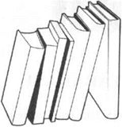
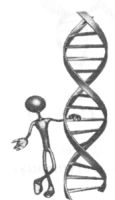

DNA
isim (Biyokimya)
Eksik-oksijenli çekirdek asidi, kromozomların ana unsuru olarak hemen hemen tüm canlı organizmalarda bulunan ve kendi kendini kopyalayan bir madde. Genetik bilginin taşıyıcısı.
isim (Kuantum Biyoloji - Metafizik)
Eksik-oksijenli çekirdek asidi; İnsan bedeninin genetik yapısının taşıyıcısı olarak, % 5’ten daha az biyolojik talimatlardan oluşan çift sarmal. DNA’nın % 90’mdan fazlası kuantum enerji ve talimatlardır, ki onlar kutsal yaşamı tanımlar ve İnsanın Akaşik tarihini ve içindeki tanrısallığı oluşturur.
